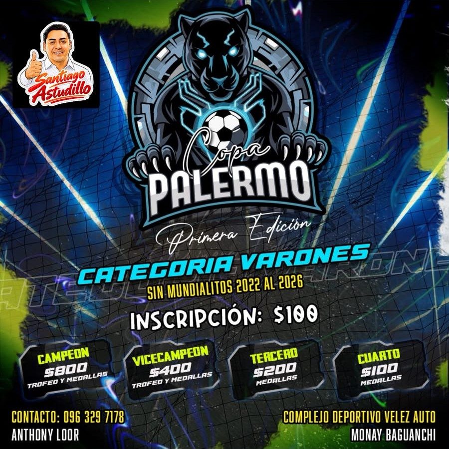

1. Qué es y cómo funciona
La página del campeonato lee un Google Sheet y calcula todo sola: tabla de posiciones, goleadores, tarjetas, calendario, fases finales y pagos. Nunca se escribe una tabla de posiciones a mano. Vos solo cargás datos: partidos, marcadores, goleadores, tarjetas y pagos.
Hay dos formas de cargar: desde la página (botón 💾 Guardar en el Sheet) o directo en el Google Sheet. Las dos funcionan y se ven igual.

2. El campeonato
| Dato | Valor |
|---|---|
| Categoría | Varones (sin mundialitos 2022 al 2026) |
| Grupos | Grupo A y Grupo B, 8 equipos cada uno |
| Inscripción | $100 por equipo |
| Puntos | Victoria 3 · empate 1 · derrota 0 |
| Clasifican | Todos los equipos (10 por grupo). Primera ronda de muerte súbita: el 1.º de A contra el último de B, y así |
| Suspensión | 3 amarillas acumuladas · roja = 1 fecha |
| Premios | Campeón $800 · Vicecampeón $400 · Tercero $200 · Cuarto $100 |
| Sede | Complejo Deportivo Velez Auto (Monay Baguanchi) |
| Contacto | Anthony Loor · 096 329 7178 |
CONFIG del Sheet y la página lo toma sola.3. Reglas para que nunca se rompa
- No cambies los nombres de las hojas (
CONFIG,EQUIPOS,PARTIDOS,GOLES,TARJETAS,PAGOS) ni los títulos de las columnas (fila 1). - Los equipos se escriben igual que en la hoja
EQUIPOS. Usá siempre las listas de la página; si escribís a mano, copiá y pegá. - Un partido sin jugar:
ESTADO = PENDIENTEyGL/GVvacíos. - Cuando se juega: poné
GLyGVyESTADO = JUGADO(desde la página esto pasa solo). - El
IDdel partido (P001, P002…) unePARTIDOSconGOLESyTARJETAS. No lo repitas ni lo cambies. - No borres ni muevas el Sheet y no le quites el acceso: debe seguir compartido como “Cualquier persona con el enlace → Lector”, si no la página no puede leerlo.
- No uses “Hacer una copia” del Sheet para reemplazarlo: la copia tiene otro enlace y no trae el puente de escritura.
4. Uso día a día
Programar la próxima jornada — pestaña Planificar
- Elegí el grupo. La matriz muestra qué equipos ya se enfrentaron (✓) y cuáles faltan (+).
- Tocá un “+” para cargar ese cruce, o usá
⚡ Armar jornada automática: empareja a los que faltan sin repetir equipo (4 partidos por grupo). - Los partidos quedan en el Borrador (bloque 3). Ahí editás fecha, hora y equipos. Con Programar todos de una vez ponés la fecha y los horarios corridos (por defecto cada 60 min).
- Tocá
💾 Guardar en el Sheet. Los partidos aparecen en el calendario.
Cargar el resultado de un partido — Planificar, bloque 4
- En Partidos programados buscá el partido y poné
GL(goles del local) yGV(del visitante). - Tocá
💾 Guardar … en el Sheet. El partido pasa a jugado y la tabla de posiciones se actualiza. - Si cambia el día o la hora, se edita en la misma fila. La ✕ borra un partido cargado por error.
Registrar goleadores — pestaña Goleadores
- Arriba elegí el partido (los que tienen goles sin asignar salen primero con ⚠) y si es Local o Visita.
- Escribí el jugador (autocompleta con los que ya jugaron) y los goles. Tocá
+ Agregar. - La página avisa si te pasás del marcador o cuántos faltan. Al final
💾 Guardar en el Sheet. - El bloque Control de carga muestra qué partidos todavía tienen goles sin goleador; tocá una fila y se carga arriba.
Tarjetas y suspensiones — pestaña Tarjetas
- Se registran igual que los goles: partido, lado, jugador, amarillas y rojas.
- Arriba aparecen los suspendidos: roja pendiente o tope de amarillas. Cuando cumple la fecha, botón
✔ cumplida. - Con los filtros de Categoría y Equipo ves solo lo de un equipo. Arriba dice “Datos subidos hasta la jornada X”.
Mandar el calendario por WhatsApp — pestaña Calendario
Filtrá la jornada, el equipo o el día y tocá 🖼 Descargar imagen: sale un PNG con el logo, fecha, horarios y canchas, listo para compartir.
Ver cómo va el campeonato
Resumen, Posiciones, Goleadores, Tarjetas y Calendario se recalculan solos cada vez que alguien abre la página. El botón ↻ Actualizar vuelve a leer el Sheet. En Posiciones y Goleadores también podés bajar una imagen.
Cobros — pestaña Pagos
- Arriba elegí el equipo, el concepto (
INSCRIPCION,ARBITRAJE,ARBITRAJE ADEUDADO,MULTAuOTRO), la jornada, la fecha y el valor. Tocá+ Agregary luego💾 Guardar en el Sheet. - ARBITRAJE ADEUDADO es lo que el equipo debe de arbitraje, no lo que pagó.
- Tocá un equipo en la tabla para ver su estado de cuenta. Ahí podés corregir jornada, fecha o valor de un pago, borrarlo, o bajar una imagen para mandársela por WhatsApp.
- Saldo pendiente = Inscripción − Abonado + Arbitraje adeudado.
Corregir un error en un partido — pestaña Calendario
- En Calendario, cada partido tiene un botón
✏ Editar. Tocalo en el partido que cargaste mal. - Podés cambiar jornada, fecha, hora, cancha, equipos y marcador, y corregir, quitar o agregar goleadores y tarjetas de ese partido.
- Tocá
💾 Guardar cambiosy esperá la confirmación.🗑 Borrar partidolo elimina completo.
Fases finales — pestaña Fases finales
Propone los cruces con la tabla actual: el 1.º del Grupo A contra el último del Grupo B, el 2.º contra el penúltimo, y así. Si clasifican todos, esa primera ronda es de muerte súbita. Los manda al borrador con la fase ya puesta (MUERTE SUBITA). Las rondas siguientes (octavos, cuartos, semifinal, tercer puesto y final) se agregan en Planificar eligiendo la fase; no cuentan en la tabla de posiciones.
5. Si algo no anda
| Problema | Qué hacer |
|---|---|
| La página no muestra lo último | Tocá ↻ Actualizar. Google puede tardar unos segundos en reflejar un cambio. |
| “No se guardó” / no confirma | Volvé a intentar. Si sigue igual, abrí el Sheet y mirá si la fila llegó. Revisá que el Apps Script siga publicado (acceso: cualquier persona). |
| Un equipo sale duplicado o un jugador aparece dos veces | Hay un nombre escrito distinto. Corregilo en la hoja PARTIDOS, GOLES o TARJETAS para que coincida con EQUIPOS. |
| La página dice “copia incrustada” | No pudo leer el Sheet (sin internet o sin acceso compartido). Mostrará la última copia hasta que vuelva. |
| Se borró una fila por error | En el Sheet: Archivo → Historial de versiones y restaurá una versión anterior. |
6. Para quien mantiene el sistema
- El Sheet es la única fuente de datos. La página (
index.html) no guarda nada por sí sola. - La conexión (
SHEET_IDy la URL del puenteAPI_URL) está al inicio deindex.html, en el bloque “Conexión con el Google Sheet”. - Para ver cambios de diseño antes de publicar: doble clic en
VER EN LOCAL.bat(necesita Node.js). - Para publicar un cambio de diseño:
node build.js, luegogit add -A,git commit -m "…"ygit push. En un par de minutos queda en línea. - El puente de escritura es el archivo
APPS-SCRIPT.gs: se pega una sola vez en el Sheet (Extensiones → Apps Script), se implementa como “Aplicación web”, ejecutar como Yo, acceso Cualquier persona.